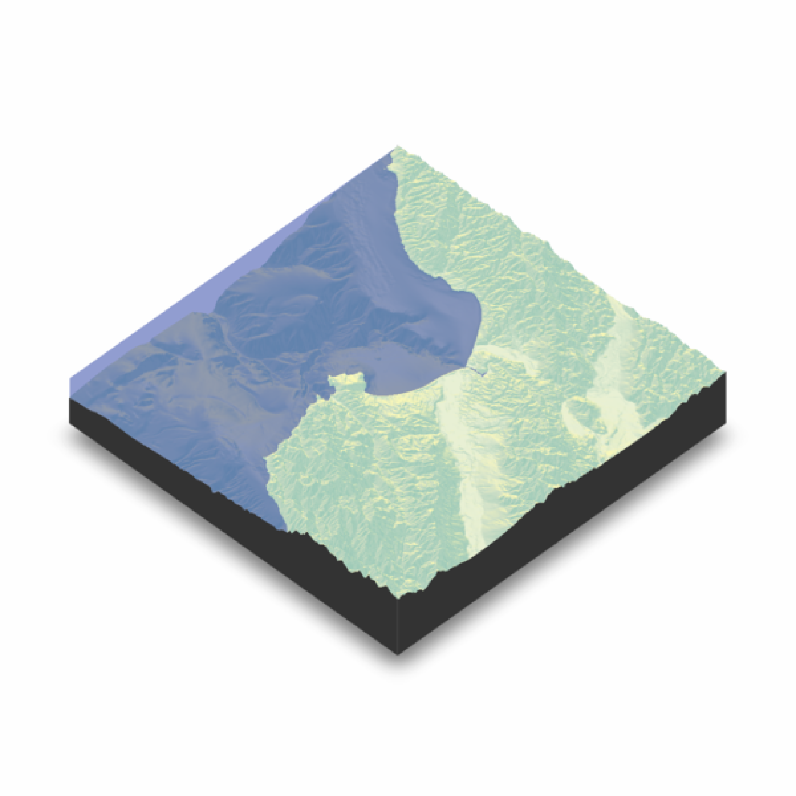
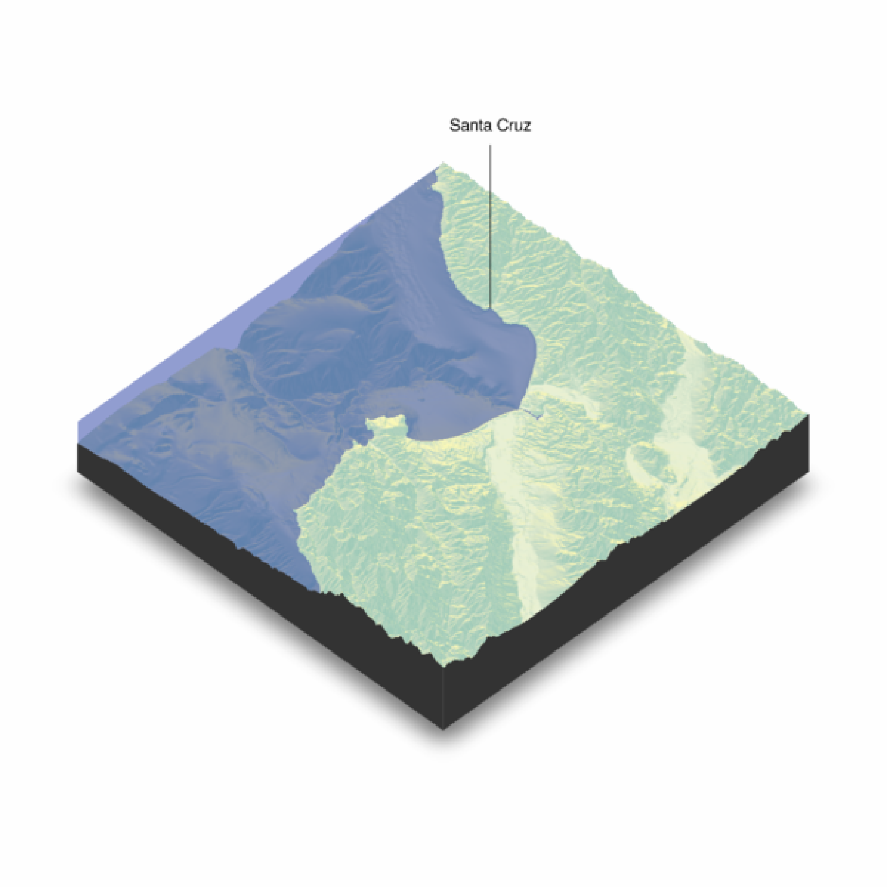

Adds a marker and label to the current 3D plot
render_label(
heightmap,
text,
lat,
long,
altitude = NULL,
extent = NULL,
x = NULL,
y = NULL,
z = NULL,
zscale = 1,
relativez = TRUE,
offset = 0,
clear_previous = FALSE,
textsize = 1,
dashed = FALSE,
dashlength = "auto",
linewidth = 3,
antialias = FALSE,
alpha = 1,
textalpha = 1,
freetype = TRUE,
adjustvec = NULL,
family = "sans",
fonttype = "standard",
linecolor = "black",
textcolor = "black"
)A two-dimensional matrix, where each entry in the matrix is the elevation at that point. All points are assumed to be evenly spaced.
The label text.
A latitude for the text. Must provide an `raster::extent` object to argument `extent` for the map.
A latitude for the text. Must provide an `raster::extent` object to argument `extent` for the map.
Default `NULL`. Elevation of the label, in units of the elevation matrix (scaled by zscale). If none is passed, this will default to 10 percent above the maximum altitude in the heightmap.
Default `NULL`. A `raster::Extent` object with the bounding box of the displayed 3D scene.
Default `NULL`. Directly specify the `x` index in the matrix to place the label.
Default `NULL`. Directly specify the `y` index in the matrix to place the label.
Default `NULL`. Elevation of the label, in units of the elevation matrix (scaled by zscale).
Default `1`. The ratio between the x and y spacing (which are assumed to be equal) and the z axis. For example, if the elevation levels are in units
Default `TRUE`. Whether `z` should be measured in relation to the underlying elevation at that point in the heightmap, or set absolutely (`FALSE`).
Elevation above the surface (at the label point) to start drawing the line.
Default `FALSE`. If `TRUE`, it will clear all existing text and lines rendered with `render_label()`. If no other arguments are passed to `render_label()`, this will just remove all existing lines.
Default `1`. A numeric character expansion value.
Default `FALSE`. If `TRUE`, the label line is dashed.
Default `auto`. Length, in units of the elevation matrix (scaled by `zscale`) of the dashes if `dashed = TRUE`.
Default `3`. The line width.
Default `FALSE`. If `TRUE`, the line with be have anti-aliasing applied. NOTE: anti-aliasing can cause some unpredictable behavior with transparent surfaces.
Default `1`. Transparency of the label line.
Default `1`. Transparency of the label text.
Default `TRUE`. Set to `FALSE` if freetype is not installed (freetype enables anti-aliased fonts). NOTE: There are occasionally transparency issues when positioning Freetype fonts in front and behind a transparent surface.
Default `c(0.5,-0.5)`. The horizontal and vertical offset for the text. If `freetype = FALSE` and on macOS/Linux, this is adjusted to `c(0.33,-0.5)` to keep the type centered.
Default `"sans"`. Font family. Choices are `c("serif", "sans", "mono", "symbol")`.
Default `"standard"`. The font type. Choices are `c("standard", "bold", "italic", "bolditalic")`. NOTE: These require FreeType fonts, which may not be installed on your system. See the documentation for rgl::text3d() for more information.
Default `black`. Color of the line.
Default `black`. Color of the text.
# \dontrun{
montereybay %>%
sphere_shade() %>%
plot_3d(montereybay,zscale=50,water=TRUE, watercolor="#233aa1")
render_snapshot()
#> Error in mesh$vertices[[j]]: subscript out of bounds
# }
santa_cruz = c(36.962957, -122.021033)
#We want to add a label to Santa Cruz, so we use the x and y matrix coordinate (x=220 and y=330)
# \dontrun{
render_label(montereybay,lat = santa_cruz[1], long = santa_cruz[2],
extent = attr(montereybay, "extent"),
altitude=12000, zscale=50, text = "Santa Cruz")
render_snapshot()
#> Error in mesh$vertices[[j]]: subscript out of bounds
# }
monterey = c(36.603053, -121.892933)
#We can also change the linetype to dashed by setting `dashed = TRUE` (additional options allow
#the user to control the dash length). You can clear the existing lines by setting
#`clear_previous = TRUE`.
# \dontrun{
render_label(montereybay, lat = monterey[1], long = monterey[2], altitude = 10000,
extent = attr(montereybay, "extent"),
zscale = 50, text = "Monterey", textcolor = "white", linecolor="darkred",
dashed = TRUE, clear_previous = TRUE)
render_snapshot()
#> Error in mesh$vertices[[j]]: subscript out of bounds
# }
canyon = c(36.621049, -122.333912)
#By default, z specifies the altitude above that point on the elevation matrix. We can also specify
#an absolute height by setting `relativez=FALSE`.
# \dontrun{
render_label(montereybay,lat=canyon[1], long = canyon[2], altitude = 2000,
extent = attr(montereybay,"extent"),
zscale=50,text = "Monterey Canyon", relativez=FALSE)
render_snapshot()
#> Error in mesh$vertices[[j]]: subscript out of bounds
# }
#We can also render labels in high quality with `render_highquality()`, specifying a custom
#line radius. By default, the labels point towards the camera, but you can fix their angle with
#argument `text_angle`.
# \dontrun{
render_camera(theta=35, phi = 35, zoom = 0.80, fov=60)
render_label(montereybay, lat = monterey[1], long = monterey[2], altitude = 10000,
extent = attr(montereybay, "extent"),
zscale = 50, text = "Monterey", textcolor = "white", linecolor="darkred",
dashed = TRUE, clear_previous = TRUE)
render_label(montereybay,lat=canyon[1], long = canyon[2], altitude = 2000, zscale=50,
extent = attr(montereybay,"extent"), textcolor = "white", linecolor="white",
text = "Monterey Canyon", relativez=FALSE)
render_highquality(samples=200,text_size = 24, line_radius = 2, text_offset = c(0,20,0),
lightdirection=180, clamp_value=10)

#Fixed text angle
render_highquality(samples=200,text_size = 24, line_radius = 2, text_offset = c(0,20,0),
lightdirection=180, text_angle=0, clamp_value=10)

# }
#We can remove all existing labels by calling `render_label(clear_previous = TRUE)`
# \dontrun{
render_label(clear_previous = TRUE)
render_snapshot()
#> Error in mesh$vertices[[j]]: subscript out of bounds
rgl::rgl.close()
# }